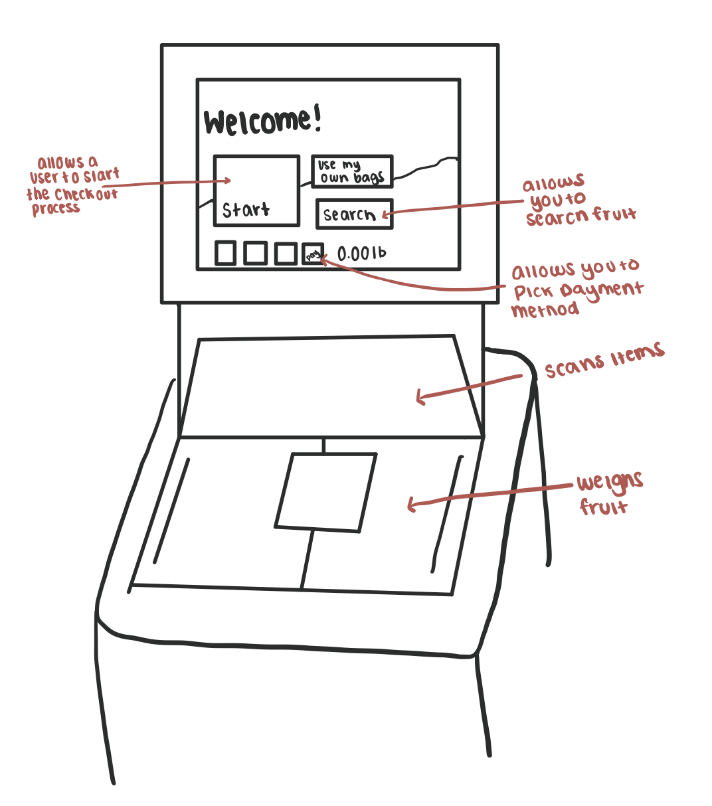

The self-checkout station at Whole Foods
The self-checkout station allows users to scan their own groceries and pay for them without human interaction. One of the key components of this interface is the list of items the user purchases, which increases each time the user scans a new item. Another key component is the price that gets calculated with each additional item scan. Another component is the fruit/vegetables button, so when a user has a fruit or vegetable they weigh the specific item, rather than scanning it. Finally, the last important component is the button that allows the user to pick how they wish to pay, through a gift card or credit card, etc.